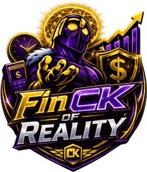

das famílias brasileiras estão endividadas
Peic/CNC, jul./2026
Conscious Knowledge
Prévia do projeto · estado atual do aplicativo
Uma passagem tela a tela pelo que já está no ar e funcionando, e pelo que ainda vem pela frente.
Abertura (20 s). Esta não é a defesa final: é a prévia do projeto. O objetivo é mostrar o aplicativo funcionando e dizer com honestidade em que ponto ele está.
Se o professor quiser abrir o app junto, o endereço é finck-app.vercel.app e há um modo demonstração que não exige cadastro.
01 · A ideia
R$ 350,00. Um número abstrato, que o cérebro processa em um segundo e esquece no seguinte.
34,2 horas da sua vida. O tempo de trabalho que você precisa entregar para pagar por aquilo.
das famílias brasileiras estão endividadas
Peic/CNC, jul./2026
já compraram por impulso para se sentir melhor
Serasa / Opinion Box, 2025
do lixo eletrônico do país é reciclado corretamente
ABES-DF, 2025
O FinCK atua no instante entre o desejo e a compra: traduz o preço em tempo de vida, mostra o efeito no mês e oferece a alternativa, sem nunca bloquear a escolha.
Gustavo (~45 s). Os três números resumem o projeto inteiro: o financeiro, o emocional e o ambiental. Não precisa ler as fontes em voz alta, estão na tela.
A frase que fecha é a tese do produto. Dizer devagar.
02 · Primeiro contato
Renda mensal, dias trabalhados no mês e horas por dia. São os três números que alimentam todo o resto: sem eles, o motor não tem como traduzir preço em tempo.
Seção 5.1 do documento.
Éric (~40 s). O modo demonstração é o atalho para mostrar o app sem pedir cadastro a ninguém. Vale citar que ele guarda no navegador, e não no banco.
Se o professor quiser testar depois, é por aí que ele entra.
03 · Início
R$ 1.240,00
seu dia vale R$ 81,82
O FinCK é um aplicativo web instalável: vai para a tela inicial do celular direto do navegador, sem loja de aplicativos. Ele precisa de internet para ler e salvar os dados.
Éric (~40 s). Mostrar o aplicativo de verdade aqui, não só o slide. O prisma gira com o mouse e é o elemento que costuma chamar mais atenção.
Não prometer uso sem internet: o app precisa de conexão. Se perguntarem, o uso offline é uma frente de continuidade do projeto.
04 · O motor demonstração ao vivo

valor_dia = renda ÷ dias
valor_hora = valor_dia ÷ horas
custo_horas = preço ÷ valor_hora
Sua hora vale R$ 10,23 · seu dia vale R$ 81,82.
Impacto moderado no mês
O app não para no número: tudo isto sai na mesma tela do resultado:
Gabriel (~60 s), DEMONSTRAÇÃO. Trocar o preço ao vivo para R$ 4.000 e deixar o professor ver o semáforo virar e a fita de baixo mudar junto.
A ideia não é nossa: Thoreau escreveu em 1854 que o custo de uma coisa é a quantidade de vida trocada por ela. O que é nosso é a velocidade, porque o app responde antes de a compra acontecer.
ANTES DE APRESENTAR: cadastrar quatro pontos reais em Ações locais na conta da demonstração, senão os dois últimos elos aparecem vazios.
05 · A saída
As faixas de economia são hipótese de design do projeto, declaradas como tal na tela, e não dado de pesquisa.
Cada alternativa puxa os pontos que o próprio usuário cadastrou em Ações locais: a assistência do bairro, o brechó da esquina, quem aluga. Desde setembro, uma busca pelo Google Maps completa o cadastro de quem ainda não tem ponto nenhum.
Declarar o destino do item também gera consequência na tela:
É aqui que o projeto encosta na meta 12.5 da ODS 12, aplicada não a política pública, mas à decisão de uma pessoa, no bairro onde ela mora.
Gabriel (~45 s). Este slide responde à exigência de aplicabilidade local. A frase que importa: o impacto ambiental é a soma de decisões individuais tomadas em um lugar concreto.
Ser honesto sobre as faixas de economia: são hipótese nossa, e o app diz isso na tela.
06 · O dia a dia
Contas, cartões e lançamentos fixos em uma visão só, com saldo por instituição.
Projeção de saldo, parcelas em aberto e teto por categoria, com aviso aos 75%.
O que você deixa de gastar vira progresso visível, com aporte e estorno rastreados.
Simulações do tipo “e se eu não comprar isso?”, comparadas ao histórico real.
Gastos por categoria e período, com exportação em CSV, que abre no Excel.
Renda, jornada e reserva. Mudou a renda, todo o cálculo acompanha.
O FinCK of Reality não responde só com o preço: ele usa o saldo real, as despesas fixas, as parcelas já assumidas e as metas em andamento. Sem o resto do app, a resposta seria um palpite.
Lançamento que falha pela metade não deixa rastro no caixa. Há estorno, fila de reconciliação e registro de eventos de integridade, tudo testado.
Paulo (~45 s). Passar rápido pelos seis módulos, sem ler um a um. O que precisa ficar é o painel da esquerda: o motor depende do resto do app para dar resposta de verdade.
Se perguntarem sobre confiabilidade, o painel da direita responde.
07 · O registro
Necessidade, uso previsto, durabilidade, existência de alternativa, peso no orçamento e destino depois do uso. As respostas geram um indicador de responsabilidade da decisão.
A pessoa volta e registra o que aconteceu de verdade: manteve a decisão, resolveu com reparo ou reuso, ou comprou depois. É o único jeito honesto de medir, e mede comportamento declarado, não impacto ambiental.
70,4 h de trabalho · 40% da renda
R$ 720 viram economia confirmada
Paulo (~40 s). O ponto forte aqui é a honestidade: o indicador mede o que a pessoa declarou, e a tela do app assume isso. Se a banca cobrar “vocês medem impacto ambiental?”, a resposta já está dada antes da pergunta.
08 · A constância
Cada decisão consciente registrada vale XP: adiar, pesquisar alternativa, comprar usado ou reparar valem mais do que comprar na hora. Vinte títulos, com limiares fixos e visíveis.
níveis, do primeiro cálculo ao topo da trilha
XP por decidir não comprar, a decisão mais pontuada
XP por comprar na hora: registra, mas quase não premia
A gamificação existe para sustentar o comportamento quando a disciplina pessoal falha, que é justamente quando a compra por impulso acontece.
Pedro (~40 s). O contraste entre +40 e +5 diz tudo sem precisar explicar: o app registra a compra por impulso, mas não a celebra.
As regras anti-farm costumam impressionar: mostram que pensamos em quem tentaria burlar.
09 · O mais novo outubro
Pesos diferentes entre si: fluxo e poupança pesam mais do que consumo consciente isoladamente.
Um diagnóstico em português dos seus próprios dados, um plano de ação priorizado e resposta a perguntas livres do tipo “o que eu deveria priorizar este mês?”.
É o princípio de ética por padrão da Conscious Knowledge aplicado ao recurso que mais precisava dele, porque gera texto livre.
Pedro (~45 s). Este é o recurso mais recente e o que mais chama atenção. Começar pelo FinCK Index, que é o que torna o diagnóstico acompanhável ao longo do tempo.
Os limites éticos não são enfeite: são a resposta pronta para “e se ele der conselho financeiro errado?”.
10 · Por baixo
MySQL Workbench, PHP e Xampp para provar a modelagem antes de subir qualquer coisa.
PostgreSQL no Supabase, com autenticação e política de acesso por usuário.
Edge Functions em TypeScript e Deno, mais funções serverless na Vercel.
Git e GitHub no controle de versão, com deploy automático a cada envio.
HTML5, CSS3 e JavaScript puro. Cada linha é compreendida e defendida pela equipe. A IA entra só onde agrega: Gemini na busca de preço, no impacto ambiental e na busca de lugares pelo Google Maps; modelos gratuitos via OpenRouter no Assistente.
Thiago (~45 s). O caminho da esquerda para a direita é a história real do projeto, e vale dizer que a prototipagem local não foi desperdício: ela provou a modelagem.
Se perguntarem por que não usamos framework: porque o critério do trabalho é demonstrar domínio, e framework esconde justamente o que precisamos provar que sabemos.
11 · Onde estamos
App publicado, banco real, autenticação e todas as telas operantes
Assistente e busca local recém-entregues, ainda recebendo ajuste de uso
Teste com usuários reais: assumido no documento e listado como continuidade
Medir com pessoas de fora do grupo se o preço em horas muda decisões de compra. O instrumento já existe no app: o acompanhamento de 30 dias de cada decisão.
Thiago (~45 s). Ser direto sobre o que falta. O teste com usuários reais não coube no prazo, e o documento diz isso no capítulo 12 em vez de inventar depoimentos. Assumir vale mais do que fingir que está pronto.
Em troca, mostrar o que foi validado: a página de testes do app roda na hora, com 400 casos passando, e a banca pode abrir o modo demonstração sem cadastro.
O app está no ar agora.
Pode abrir e testar enquanto a gente responde.
Conscious Knowledge · Etec Taboão da Serra · Orientador: Prof. Sullivan Franco
Fechamento (~20 s). Deixar o app aberto no projetor durante as perguntas. É mais convincente do que qualquer slide.
Lista reduzida às fontes citadas nesta apresentação. A relação completa está nas Referências do documento do projeto, junto das obras consultadas sobre arquitetura de sistemas, contêineres e computação em nuvem.
No celular ou no tablet, deslize para os lados para trocar de slide.